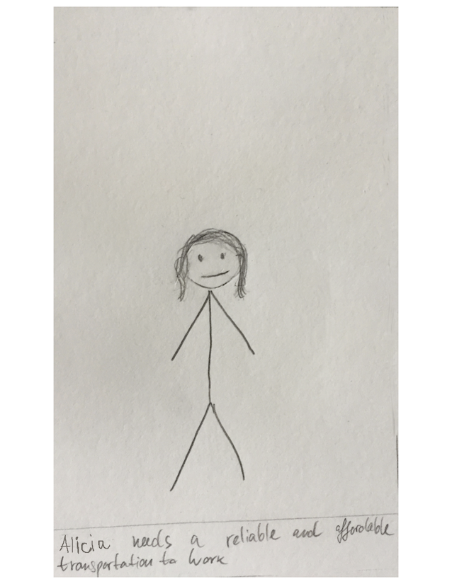
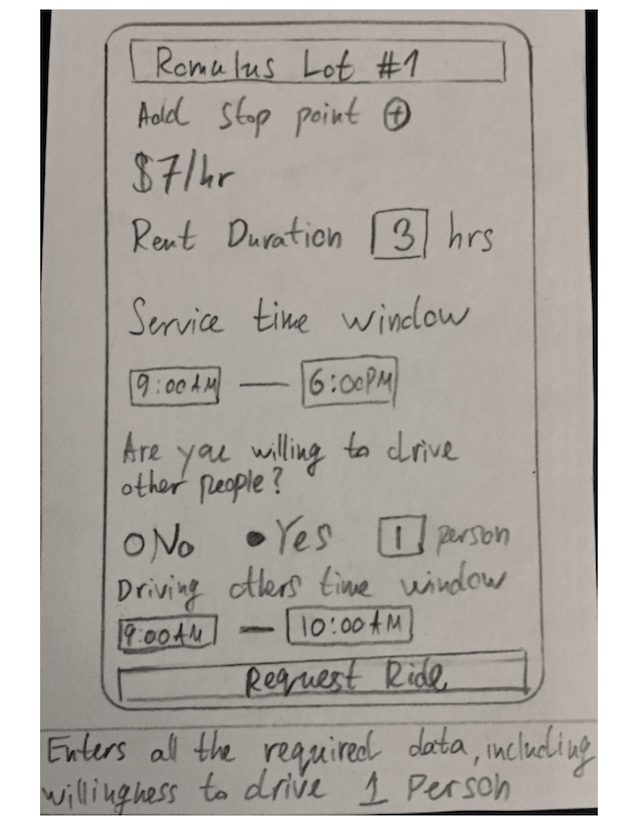

- Date: October 2016 - Present
- Role: UX Designer | Web Developer
- Work Setting: Team of 5
The purpose of this project is to investigate the feasibility, challenges, and opportunities to serve the underserved communities through shared connected vehicles with emerging information and communication technologies. We are studying two types of vehicle-and-service-sharing (V&SS) schemes which we refer as centralized and decentralized systems, and their benefits to underserved communities. The initial focus of the project is to pursue the centralized model.
People living in underprivileged communities face transportation challenges. In such areas, public transportation is not available or unreliable. Vehicle-sharing services like Zipcar or Uber have open doors for great innovation in transportation via having people share vehicles and thus enable make transportation available to people without vehicles. However, such services have not spread out to underserved communities. We are investigating this problem and will propose a possible solution.
In order to figure out details about out target audience, we looked at published literature on the subject, as well as data from Uber rides in the Detroit area. We looked into what the needs of the people in the underprivileged areas around Detroit are. Focus was given on which cities have poor access to public transportation and what are the common needs that people have.
In order to get an understanding of the interactions and workflows involved in a ride-sharing application, I conduced a competitive analysis with popular centralized vehicle-sharing systems.
{kind=link}
{kind=link}
The analysis gave us a high level understanding about how cetralized vehicle sharing systems work and what their user interface look like. From those, I sketched some initial screens, so that the team can use those sketches to better communicate and to show to users.

We wanted to get a better insight into the challenges associated with vehicle sharing, so we created a set of scenarios to show to potential users. Here is an example scenario:
 
{kind=link}
{kind=link}
{kind=link}
{kind=link}
{kind=link}
{kind=link}
{kind=link}
{kind=link}
We also created personas that represent our target audience. Additionally, we developed an anti-persona to help us stay on course with our design and not go off track. We wanted to show the personas in our user interviews, to make sure we understand who our target audience is.
{kind=link}
Our next steps was to interview stakeholders and gather more data. We met with employees of a community service center in our target area. Such centers provide many services to people, such as help with job search, tax repairs, or transportation facilitation. We got feedback on our scenarios and personas, as well as more info about common problems that people report to the center.
Next, we developed low-fidelity paper prototypes based on all the data that we collected thus far.
{kind=link}
{kind=link}
To test our prototypes, we used a participatory design exercise called Scrolls. We placed our prototypes on a scroll, met with target users, and unveiled the scroll. Participants could see one prototype at a time and were encouraged to suggest changes. They had a pencil and could draw directly on the scrolls. That same day, we also conduced a focus group activity, which helped us further validate our assumptions and understanding of the users.

{kind=link}
We built a working prototype of our app. I was responsible for the interaction design and front-end developemnt.
Our next step is to pilot the app with our target users, and assess its value.